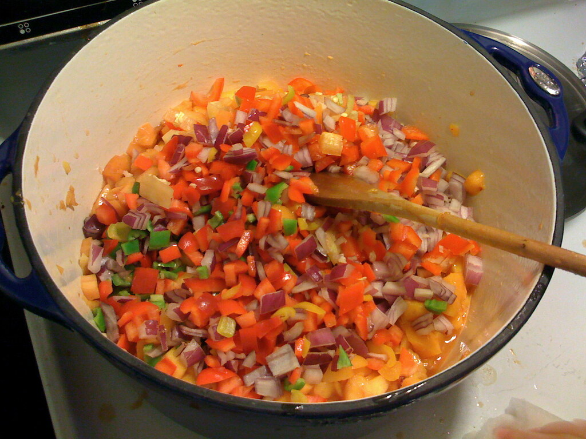

Peach Tomato Salsa

Salsa originates from the Inca people and is typically a mixture of chilies, tomatoes, and other spices. In recent years, people have been using fruits and vegetables in salsa combiniations to make a spicy fruit salsa. A popular fruit combination includes peaches as the main ingredient, mixed with tomatoes, other vegetables, and spices.
Yields 6 servings (½ cup each)
Ingredients
- 3 tomatoes, chopped
- 3 tomatillos with paper-like husk removed, chopped
- 1/2 green bell pepper, chopped
- 1/2 cucumber, unpeeled, chopped
- 2 peaches, chopped
- 1 red onion, chopped
- 2 tablespoons fresh lime juice
- 1/2 cup cilantro, chopped
- 1/4 teaspoon black pepper, optional
- 1 jalapeño pepper, chopped small, optional
Instructions
- Add all chopped vegetables to a large bowl. Add fresh lime juice and mix well.
- Mix in fresh cilantro and black pepper.
- Serve immediately or keep refrigerated.
Credits
"Recipe from the CUCE-NYC FMNP Recipe Collection 2015"
"Making Peach Salsa" by Waldo Jaquith is licensed under CC BY-SA 2.0